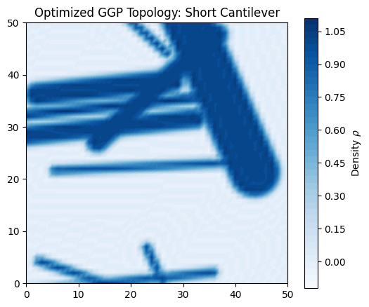
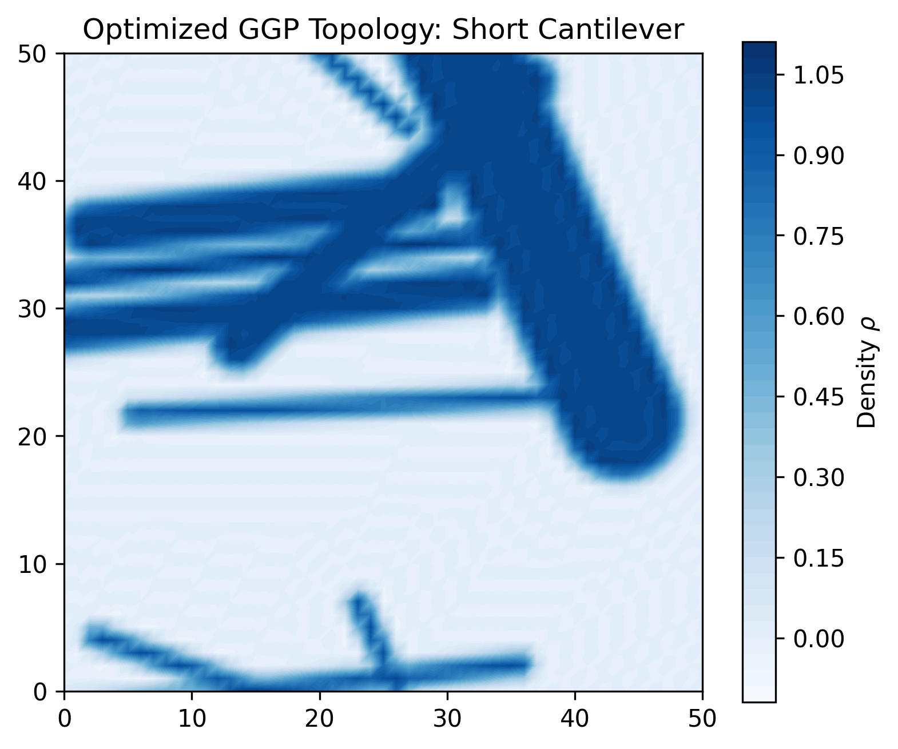

Short Cantilever¶
This is an interactive Jupyter Notebook implementation.
[1]:
import dolfin as df
from dolfin_adjoint import Constant, DirichletBC, RectangleMesh, stop_annotating
import numpy as np
import gemseo
from gemseo import create_scenario
from samo_ggp.geometry.factory import GeometryFactory
from samo_ggp.physics.factory import PhysicsFactory
from samo_ggp.gemseo_wrappers.macro_discipline import GGPMacroDiscipline
import matplotlib.pyplot as plt
import os
[2]:
def run_short_cantilever():
L, H = 50.0, 50.0
nelx, nely = 50, 50
volfrac = 0.4
num_components = 10
# Mesh and Spaces
mesh = RectangleMesh(df.Point(0, 0), df.Point(L, H), nelx, nely)
V_u = df.VectorFunctionSpace(mesh, "CG", 1)
# Boundary Conditions: Left edge fixed
def left_boundary(x, on_boundary): return on_boundary and df.near(x[0], 0.0)
bc = [DirichletBC(V_u, Constant((0.0, 0.0)), left_boundary)]
# Load: Point load on middle right
boundaries = df.MeshFunction("size_t", mesh, mesh.topology().dim() - 1)
boundaries.set_all(0)
class MiddleRightArea(df.SubDomain):
def inside(self, x, on_boundary): return df.near(x[0], L, 2.0) and df.near(x[1], H/2.0, 5.0)
MiddleRightArea().mark(boundaries, 1)
ds_load = df.Measure("ds", domain=mesh, subdomain_data=boundaries)
L_rhs_vec = Constant((0.0, -1.0))
# Initialization
mapper = GeometryFactory.create_mapper("2D_Free", mesh=mesh, num_components=num_components)
solver = PhysicsFactory.create_solver("Elasticity_2D", V_u=V_u, bc=bc, ds_load=ds_load, L_rhs_vec=L_rhs_vec)
x_init = mapper.get_initial_design(L, H)
lb = np.array([0.0, 0.0, 5.0, 2.0, -np.pi] * num_components)
ub = np.array([L, H, L, H/2, np.pi] * num_components)
# Discipline and Optimization
disc = GGPMacroDiscipline(mapper, solver, x_init, lb, ub, mesh_area=L*H, name="GGP_Short_Cantilever")
design_space = gemseo.algos.design_space.DesignSpace()
design_space.add_variable("x_vars", size=len(x_init), lower_bound=lb, upper_bound=ub, value=x_init)
scenario = create_scenario(disciplines=[disc], objective_name="compliance", design_space=design_space, formulation_name="DisciplinaryOpt")
scenario.add_constraint("volume", "ineq", positive=False, value=volfrac)
scenario.execute(algo_name="MMA", max_iter=5, max_optimization_step=0.1)
# --- Post-Processing ---
print("Post-processing optimal design...")
os.makedirs("results", exist_ok=True)
# 1. Retrieve optimal design variables from GEMSEO
opt_x = scenario.optimization_result.x_opt
# 2. Assign back to FEniCS constants to update the UFL graph
for c, v in zip(disc.controls_objs, opt_x):
c.assign(float(v))
with stop_annotating():
# 3. Recompute the density field and project to a Function Space
V_rho = df.FunctionSpace(mesh, "CG", 1)
rho_opt_ufl = mapper.map_to_density(disc.controls_objs)
rho_opt = df.project(rho_opt_ufl, V_rho)
rho_opt.rename("Density", "Optimized GGP Density")
# 4. Save to Paraview format (.pvd)
df.File("results/short_cantilever_optimized.pvd") << rho_opt
# 5. Save PNG using Matplotlib
plt.figure(figsize=(6, 5))
p = df.plot(rho_opt, cmap="Blues")
plt.colorbar(p, label="Density $\\rho$")
plt.title("Optimized GGP Topology: Short Cantilever")
plt.savefig("results/short_cantilever_optimized.png", dpi=300, bbox_inches="tight")
print("Results saved to 'results/' directory.")
[3]:
if __name__ == "__main__":
run_short_cantilever()
INFO - 21:54:07: *** Start MDOScenario execution ***
INFO - 21:54:07: MDOScenario
INFO - 21:54:07: Disciplines: GGP_Short_Cantilever
INFO - 21:54:07: MDO formulation: DisciplinaryOpt
INFO - 21:54:07: Optimization problem:
INFO - 21:54:07: minimize compliance(x_vars)
INFO - 21:54:07: with respect to x_vars
INFO - 21:54:07: under the inequality constraints
INFO - 21:54:07: volume(x_vars) <= 0.4
INFO - 21:54:07: Solving optimization problem with algorithm MMA:
Solving linear variational problem.
INFO - 21:54:20: 20%|██ | 1/5 [00:12<00:50, 4.72 it/min, feas=False, obj=1]
Solving linear variational problem.
INFO - 21:54:32: 40%|████ | 2/5 [00:24<00:37, 4.84 it/min, feas=True, obj=0.997]
Solving linear variational problem.
INFO - 21:54:44: 60%|██████ | 3/5 [00:36<00:24, 4.90 it/min, feas=True, obj=0.484]
Solving linear variational problem.
INFO - 21:54:56: 80%|████████ | 4/5 [00:48<00:12, 4.92 it/min, feas=True, obj=0.393]
Solving linear variational problem.
INFO - 21:55:08: 100%|██████████| 5/5 [01:00<00:00, 4.92 it/min, feas=True, obj=0.0461]
INFO - 21:55:08: Optimization result:
INFO - 21:55:08: Optimizer info:
INFO - 21:55:08: Status: None
INFO - 21:55:08: Message: Maximum number of iterations reached. GEMSEO stopped the driver.
INFO - 21:55:08: Solution:
INFO - 21:55:08: The solution is feasible.
INFO - 21:55:08: Objective: 0.046078938061764836
INFO - 21:55:08: Standardized constraints:
INFO - 21:55:08: [volume-0.4] = -0.07286574826274778
INFO - 21:55:08: *** End MDOScenario execution ***
Post-processing optimal design...
Results saved to 'results/' directory.

Optimized Result:nbsphinx-math:n\n

¶